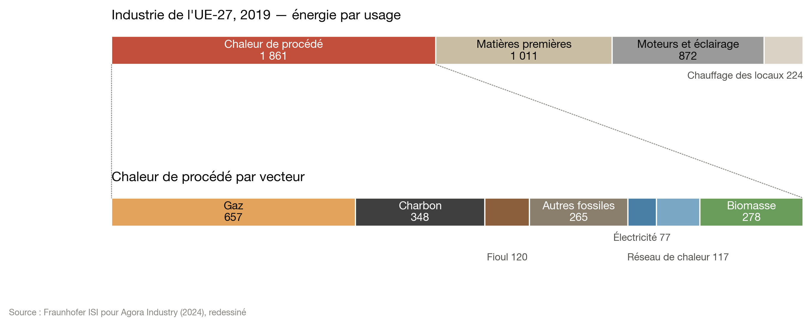
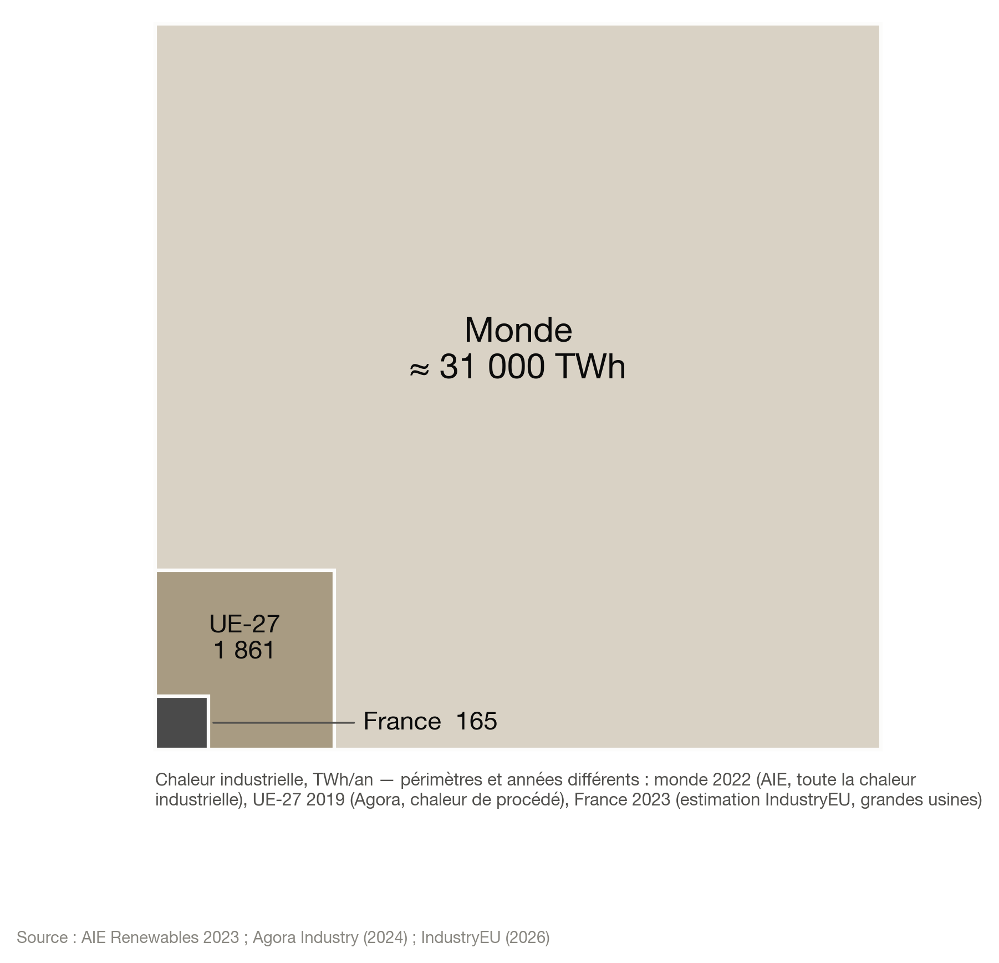
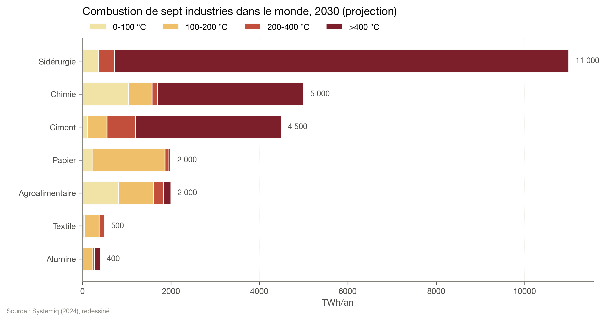
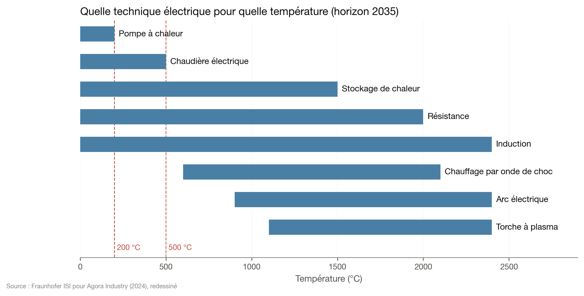
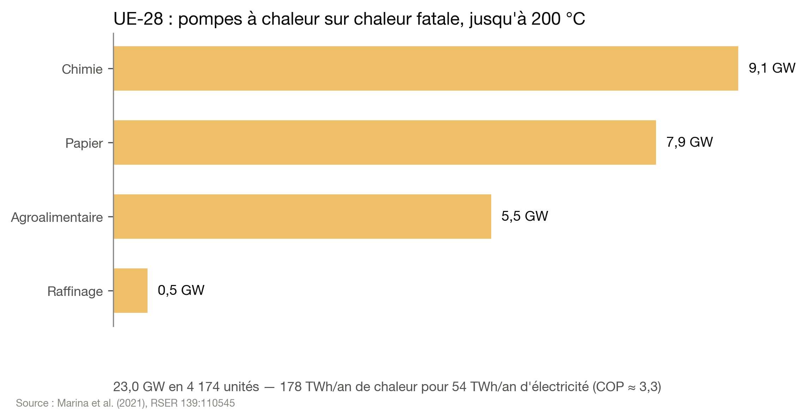

La chaleur industrielle : combien, à quelle température, et ce que l'électricité peut en faire
Note qui accompagne les six vidéos courtes « Chaleur dans l'industrie » ; chaque chiffre y est rangé avec sa page, son périmètre et son statut (fichier data/chaleur_factors.md) ; sept figures redessinées (celles d'Agora et de Systemiq sont sous droits).
1. Ce que dit cette note
La chaleur est le premier usage de l’énergie dans l’industrie et la première cause de ses émissions. En Europe, elle vient encore aux trois quarts de la combustion fossile, et l’électricité n’en fournit que 4 %. Ce n’est pas faute de machines : sous 200 °C, la pompe à chaleur rend trois fois plus de chaleur qu’elle ne consomme d’électricité ; au-dessus, la résistance, l’induction, l’arc et le plasma couvrent presque toutes les températures. Une étude du Fraunhofer ISI pour Agora Industry estime que 90 % de l’énergie de l’industrie européenne qui n’est pas encore électrique pourrait l’être d’ici 2035, techniquement. Ce qui reste, c’est surtout le charbon de la sidérurgie, qui ne sert pas qu’à chauffer.
Chaque chiffre de cette note est dans
data/chaleur_factors.md, avec sa page, son périmètre et son
statut (vérifié, calculé, seconde main).
2. Combien de chaleur
Europe. En 2019, l’industrie de l’UE-27 a demandé environ 4 000 TWh (3 968), en comptant les matières premières. La chaleur de procédé en prend 1 861 TWh, près de la moitié (47 %) ; viennent ensuite les matières premières (1 011), la force motrice et l’éclairage (872), le chauffage des locaux (224). (Agora 2024, fig. 4)

Monde. L’AIE ne publie pas le total, mais il se déduit de sa projection : la demande de chaleur industrielle doit croître de 16 %, soit 17,6 EJ, entre 2023 et 2028. La base de 2022 est donc d’environ 110 EJ, soit 30 600 TWh (calculé). Le monde chauffe ses usines avec seize fois la chaleur de l’Europe.
France. Il n’existe pas de statistique publique récente de la « chaleur de procédé » française. Deux ordres de grandeur se recoupent :
- l’ADEME (2015, données 2012) : 271 TWh de combustibles à usage énergétique, dont 70 % (190 TWh) pour les fours et les séchoirs, plus 21 TWh d’électricité qui sert à chauffer (fours à résistance et à arc) ;
- IndustryEU (base ouverte du centre PERSEE, 2023) : 165 TWh de chaleur de procédé utile pour les grandes usines, estimés avec des parts par température moyennes de l’UE.
Pour situer : Eurostat compte 284 TWh de consommation finale énergétique pour toute l’industrie française en 2023, dont 102 TWh d’électricité (36 %).

3. D’où elle vient, et ce qu’elle émet
La chaleur de procédé européenne vient du gaz (657 TWh), du charbon (348), de la biomasse (278), d’autres fossiles (265, dont les gaz sidérurgiques et les déchets), du fioul (120), des réseaux de chaleur (117) et, en dernier, de l’électricité (77 TWh, 4 %). Les fossiles en font environ 75 %.
Les mêmes trois quarts se retrouvent dans les émissions : les fours font 51 % des gaz à effet de serre de l’industrie européenne, la vapeur et l’eau chaude 24 %, les émissions de procédé (la décarbonatation du calcaire, par exemple) 20 % et le chauffage des locaux 5 %. (Agora 2024, fig. 3, données 2018)
4. Tout est affaire de température
La moitié de la chaleur de procédé européenne dépasse 500 °C ; près de 40 % reste sous 200 °C. Le partage suit les industries : la sidérurgie (460 TWh, dont 390 au-dessus de 500 °C), la chimie et les minéraux non métalliques (ciment, chaux, verre, céramique) chauffent haut ; le papier (221 TWh sur 237 sous 200 °C) et l’agroalimentaire (137 sur 163) chauffent bas, le plus souvent par de la vapeur.

À l’échelle du monde, le rapport Systemiq (2024) projette pour 2030 une combustion de 25 400 TWh dans sept industries, dont 67 % au-dessus de 400 °C, la sidérurgie seule pesant 11 000 TWh. C’est une projection, sur la combustion seule : elle ne se compare pas terme à terme aux chiffres européens.

5. Quelle machine électrique pour quelle température

Sous 200 °C, la pompe à chaleur. Elle ne produit pas la chaleur, elle la déplace : elle prend la chaleur perdue d’une étape et la remonte à la température d’une autre. Marina et al. (2021) ont recensé, procédé par procédé, ce que des pompes à chaleur pourraient reprendre sur la chaleur fatale dans quatre industries européennes (papier, chimie, agroalimentaire, raffinage) : 23 GW en 4 174 machines, qui donneraient 641 PJ (178 TWh) de chaleur par an pour 195 PJ (54 TWh) d’électricité. Le COP de l’ensemble est de 3,28, le COP médian d’une machine de 2,77. Les auteurs tiennent ce potentiel pour une borne basse.

En France, l’exemple le plus récent est la levurerie Lesaffre de Marcq-en-Barœul : deux pompes à chaleur de 19 MW thermiques au total, qui reprennent la chaleur de la fermentation pour le séchage, couvrent 70 % des besoins de chaleur du site depuis leur inauguration le 14 octobre 2025.
Au-dessus, la résistance, l’induction, l’arc, le plasma. La chaudière électrique va jusqu’à 500 °C, la résistance jusqu’à 2 000 °C, l’arc et le plasma au-delà. Deux réalisations datées : le four de verre 100 % électrique de Verallia à Châteaubernard (180 t de verre par jour, inauguré en septembre 2024) et le vapocraqueur chauffé à l’électricité de BASF, SABIC et Linde à Ludwigshafen (démonstrateur de 6 MW, démarré le 17 avril 2024).
Ce que tout cela permettrait. Agora estime qu’avec les techniques existantes ou attendues d’ici 2035, 90 % des 2 068 TWh que l’industrie européenne consomme encore sous une autre forme que l’électricité pourraient être électrifiés : 62 % dès 2025, 20 % de plus dès 2030 et 8 % dès 2035. Restent 208 TWh, dont 202 dans la sidérurgie, où le carbone réduit le minerai : ce n’est plus de la chaleur, c’est de la chimie.

Ce potentiel est technique. Il ne dit rien du prix de l’électricité, qui décide en pratique (c’est l’objet de la série « Économie »).
6. Stocker la chaleur
Une usine chauffe jour et nuit ; l’électricité bon marché, elle, arrive par moments. Une batterie de chaleur (briques, sable, roche, sel fondu) se charge quand le courant est bon marché et rend la chaleur à toute heure. Systemiq estime à 3 100 TWh le marché accessible sous 400 °C d’ici 2030 (projection). Les premières installations industrielles sont récentes : Rondo en Californie (100 MWh, octobre 2025, sur un champ solaire), Kyoto Group en Hongrie (56 MWh chez KALL Ingredients, octobre 2025). En France, Eco-Tech Ceram stocke à 600 °C la chaleur perdue des fours de tuileries pour leurs séchoirs (Tegulys, 1,3 MWh, 2019 ; Wienerberger à Pontigny, 2 × 2,3 MWh, 2024) : c’est du stockage de chaleur fatale, pas d’électricité.
La première batterie « électricité → vapeur » de l’industrie française, selon son constructeur, est celle d’Epyr, inaugurée le 29 mai 2026 dans la papeterie WEPA de Troyes : des briques céramiques chauffées aux heures d’électricité bon marché y fournissent un quart de la vapeur du site (capacité non publiée).
Les techniques, leurs coûts et leur maturité sont détaillés dans une
note à part, Note_Stockage_chaleur.md (table
data/stockage_chaleur_factors.md).
7. Le solaire thermique, un appoint
On peut aussi faire de la chaleur basse température sans combustion avec le soleil. La plus grande centrale solaire thermique de France, LACTOSOL (Newheat, chez Lactalis Ingredients à Verdun, en service depuis juin 2023), aligne 15 000 m² de capteurs, 12,4 MW thermiques en crête et 3 000 m³ de stockage d’eau chaude, pour environ 8 000 MWh par an : 6 % de la chaleur de l’usine. Dans le monde, l’AIE compte un peu plus de 850 MW de solaire thermique industriel fin 2022 et environ 22 PJ (6 TWh) de chaleur par an, soit de l’ordre de 0,02 % de la chaleur industrielle (calculé).
8. Ce qui n’est pas établi, et les chiffres qui circulent mal
- « 90 % de la chaleur est électrifiable » : non, 90 % de l’énergie finale de l’industrie pas encore électrique (≈ 2 070 TWh, chaleur, moteurs et locaux confondus).
- La figure d’Agora n’est pas cohérente avec elle-même : ses barres par secteur donnent 1 425 TWh électrifiables dès 2025, sa barre totale 1 290. Les autres étapes concordent.
- Le charbon fait 19 % de la chaleur de procédé (348 / 1 861), pas 27 % comme l’écrit le résumé du même rapport.
- L’alumine de Systemiq : 69 % est une coquille pour 60 %.
- Les températures de stockage annoncées (1 800 °C, « plus de 1 000 °C ») sont celles des briques, pas celles de la chaleur livrée.
- Le COP de 3,5 sous 200 °C qui circule pour le monde est une hypothèse interne d’un industriel, optimiste pour de la vapeur au-dessus de 150 °C ; Marina et al. donnent 3,28 en moyenne, 2,77 en médiane.
- La France : les chiffres de l’ADEME de 2017 (110 TWh de chaleur fatale, dont 53 au-dessus de 100 °C) et de 2020 (42 TWh de chaleur électrifiable par des techniques matures) ne sont connus ici que par le rapport PEPS5 ; la librairie de l’ADEME était inaccessible. L’édition 2015 donnait 51 TWh au-dessus de 100 °C.
9. Sources
- Fraunhofer ISI pour Agora Industry (2024), Direct electrification of industrial process heat, v1.1, juin 2024, CC BY-NC-SA 4.0. Figures 1 à 5 redessinées.
- Systemiq (2024), Catalysing the global opportunity for electrothermal energy storage, février 2024. Figure 5 redessinée à partir de ses chiffres.
- AIE (2024), Renewables 2023, chapitre 3, CC BY 4.0.
- Projets Epyr (epyr.co) et Newheat (newheat.com), voir
projets_reels_catalogue.md. - Marina A. et al. (2021), « An estimation of the European industrial heat pump market potential », Renewable and Sustainable Energy Reviews 139:110545.
- ADEME (2015), La chaleur fatale industrielle ; ATEE/ADEME (2023), Étude PEPS5.
- Eurostat,
nrg_bal_c; IndustryEU (2026), doi:10.5281/zenodo.21979416. - Projets : communiqués et presse cités dans
projets_reels_catalogue.md.
Télécharger la version PDF (les liens y restent actifs).